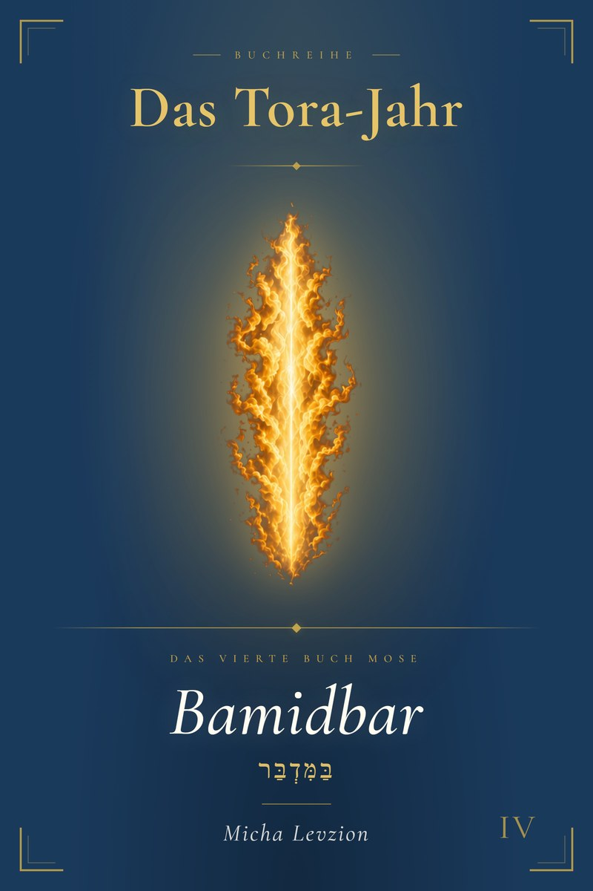

Mit der Tora durch das Jahr · Band IV
In der Wüste
Vierzig Jahre liegen zwischen der Sklaverei in Ägypten und dem verheißenen Land. Vierzig Jahre Wüste. Vierzig Jahre Aufbrüche, Murren, Prüfungen, Wunder, Stille.
Bamidbar ist das Buch dieser Wüste. Es erzählt, wie ein Volk lernt, was Freiheit bedeutet, wenn man nichts in den Händen hält außer dem, was Gott gibt.

Worum es geht
Das vierte Buch Mose ist das Buch des Weges. Eingangs steht ein Volk, das gerade aus der Sklaverei kam, und am Ende ein Volk, das vor dem verheißenen Land steht. Dazwischen: die Wüste.
In dieser Wüste passieren die spannendsten Dinge der ganzen Tora. Aufstände. Wunder. Die Zwölf Kundschafter. Die Rote Kuh. Bileams Esel. Die Sehnsucht nach Ägypten und die Lockung von Moab. Und mittendrin: ein Gott, der nicht nur draußen mitwandert, sondern in der Mitte des Lagers wohnt.
Dieses Buch nimmt dich mit durch alle zehn Wochenlesungen (Paraschot) von Bamidbar. Ohne Eile, Vers für Vers, Gedanke für Gedanke. Mit Tiefe und Wärme. Mit hebräischen Einblicken, mit Stimmen aus der jüdischen Tradition, mit Gebetsimpulsen und Reflexionsfragen — und mit der Frage, was das alles für dein eigenes Leben bedeuten könnte.
Wie es aufgebaut ist
Jede der zehn Paraschot bekommt dieselbe klare Struktur. So findest du dich schnell zurecht und kannst entweder am Stück lesen oder gezielt zu einem Abschnitt blättern.
Der Name, das Wort, das große Bild. Worum es in dieser Lesung geht.
Wie sie sich in den Bogen des Bamidbar-Buches und der ganzen Tora einordnet.
Was passiert? Personen, Orte, Handlung — der Text in geordneter Form.
Der Vers, der den Kern berührt. Mit einer Auslegung, die den Text öffnet.
Eine offene Frage, die der Text aufwirft, mit drei möglichen Antworten aus der jüdischen Tradition.
Eine längere Auslegung, die die Themen vertieft und Querverbindungen zieht.
Eine Stimme aus Midrasch, Talmud oder Auslegungsliteratur — überraschend und tief.
Wie die Themen dieser Lesung durch die ganze Bibel weiterklingen.
Die zugehörige Prophetenlesung — und was sie der Tora-Stelle hinzufügt.
Vier bis sechs Fragen für dich allein, für den Hauskreis oder das Familiengespräch.
Vier Gebetsimpulse mit ausformulierten Texten, die du beten kannst — oder nicht.
Zehn Multiple-Choice-Fragen mit Lösungen am Ende des Buches.
Fünf Schlüsselwörter der Parascha mit Originalschrift, Bedeutung und Hintergrund.
Damit du es weißt
Du musst nicht jeder Auslegung zustimmen. Du musst nicht alles gut finden. Aber wir wollen Gedanken anregen und Tiefe mitgeben — und das geht nur, wenn man bereit ist, einmal über den eigenen Tellerrand zu schauen.
Probekapitel
Damit du einen echten Eindruck bekommst: Hier sind die ersten vier Abschnitte der ersten Wochenlesung. Genau so, wie sie auch im Buch stehen. Wenn dich das anspricht, hast du noch neun weitere Paraschot mit derselben Tiefe vor dir.
34. Parascha
„In der Wüste"
4.Mo 1,1–4,20
Das hebräische Wort „Bamidbar“ setzt sich aus zwei Teilen zusammen: „Be“ (in) und „Midbar“ (Wüste). Wörtlich bedeutet es: „in der Wüste“. Es ist gleichzeitig der erste bedeutungsvolle Begriff der ersten Verse und der Name des gesamten vierten Buches Mose. Im Deutschen ist es als „4. Buch Mose“ bekannt, auf Hebräisch trägt es schlicht den Titel seines ersten prägenden Wortes: Bamidbar.
Die Wüste ist in der Bibel kein Ort des Verderbens, obwohl sie das sein könnte. Sie ist trocken, karg, lebensfeindlich. Kein Luxus, keine Ablenkung, keine Bequemlichkeit. Aber genau das macht sie zu etwas Besonderem: Sie ist der Ort, an dem es keine Ausreden gibt. Nichts lenkt ab. Nichts übertönt die Stille. Und in der Stille… spricht Gott.
Das Hebräische kennt keine Zufälligkeiten, ganz besonders nicht in der Wahl der Konsonanten eines jeden einzelnen Wortes: Spannend ist, dass das Wort „Midbar“ (Wüste) und das Wort „Dawar“ (reden, Wort) dieselbe Wurzel teilen (D-W-R, auf Hebräisch geschrieben als Daleth-Beth-Resch). Die Ausleger haben diesen Zusammenhang immer wieder aufgegriffen und ihn nicht als Spielerei betrachtet, sondern als theologischen Fingerzeig: Die Wüste ist der Ort, wo Gott redet. Und das bedeutet auch, dass das Schweigen der Wüste die Voraussetzung für das Hören ist.
Das vierte Buch beginnt genau einen Monat nach der Errichtung der Stiftshütte. Das Volk Israel steht am Sinai. Die großen Offenbarungserlebnisse des Exodus liegen hinter ihm. Nun beginnt die lange, schwierige Phase des Weges. Die Wüstenzeit ist die Zeit des Formens: Aus einer Gruppe von befreiten Sklaven wird ein Volk, das fähig ist, das verheißene Land zu betreten.
Der Name „Bamidbar“ fasst dieses ganze Programm in einem einzigen Wort zusammen. Nicht „Heldentaten“, nicht „Siege“, nicht „Eroberung“. „In der Wüste“. Dort, wo nur Gott bleibt, wenn alles andere wegfällt. Dort beginnt das Eigentliche.
Das dritte Buch Mose (Wajikra) war das Buch der Heiligkeit. Opferordnungen, Reinheitsgesetze, Feste und Bundesregeln bildeten seinen Kern. Es war das Handbuch für ein heiliges Leben in der Gegenwart Gottes. Bamidbar eröffnet nun ein neues Kapitel in der Geschichte des Volkes: Die Organisation, den Aufbruch und den Weg durch die Wüste in Richtung des verheißenen Landes.
Das vierte Buch wird von zwei großen Zählungen gerahmt: Einer am Beginn (Kap. 1) und einer gegen Ende (Kap. 26). Zwischen diesen beiden Zählungen liegt alles, was das Volk Israel in der Wüste erlebt, die Aufstände, die Prüfungen, die Klagen, aber auch die Führung und die Fürsorge Gottes. Bamidbar eröffnet diesen Bogen.
Nach der ersten Parascha Bamidbar folgen weitere Paraschas über die Wüstenzeit, die das Volk schrittweise an die Grenze des Landes Kanaan führen. Wer das vierte Buch Mose liest, betritt den großen mittleren Teil der Tora: Es geht um den Weg, nicht um die Ankunft. Das macht diese Parascha zum Eingangstor in einen der spannendsten und dramatischsten Teile der Tora.
Am ersten Tag des zweiten Monats im zweiten Jahr nach dem Auszug aus Ägypten erteilt Gott Mose einen klaren Befehl: Er soll alle Männer Israels zählen, die zwanzig Jahre alt oder älter sind und wehrfähig. Für jeden Stamm wird ein Fürst (Nasi) benannt, der die Zählung unterstützt. Die Leviten werden ausdrücklich von dieser Volkszählung ausgenommen.
Stamm für Stamm werden die Zahlen aufgelistet: Ruben, Schimeon, Gad, Jehuda, Issachar, Sebulon, Efraim, Manasse, Benjamin, Dan, Ascher, Naftali. Am Ende steht das Gesamtergebnis: 603.550 Männer über zwanzig Jahre. Es ist eine eindrucksvolle Zahl für ein Volk, das wenige Generationen zuvor als eine einzige Familie nach Ägypten gezogen war.
Die Leviten werden gesondert behandelt. Sie werden nicht mitgezählt und nicht in die Streitmacht eingeschlossen. Stattdessen werden sie zum Dienst an der Stiftshütte bestimmt. Sie lagern ringsum um das Heiligtum, sie tragen es beim Aufbruch, sie bauen es auf und sie bewachen es. Wenn ein Fremder sich dem Heiligtum nähert, soll er sterben.
Das zweite Kapitel beschreibt die Lagerordnung der zwölf Stämme mit bemerkenswerter Präzision. Drei Stämme lagern nach Osten unter dem Leitstamm Jehuda. Drei nach Süden unter Ruben. Drei nach Westen unter Efraim. Drei nach Norden unter Dan. Jede Gruppe hat ihre eigene Fahne. In der Mitte des Lagers: die Stiftshütte. Das Volk kreist um die Gegenwart Gottes.
Das dritte Kapitel gilt den Priestern und Leviten. Aaron und seine Söhne sind die Priester, die für den direkten Dienst am Heiligtum verantwortlich sind. Die Leviten werden in drei Familien aufgeteilt: Gerschon ist für die Tücher und Bedeckungen der Stiftshütte zuständig, Kehath für die heiligen Geräte, Merari für die Holzteile und Träger. Jede Familie hat ihren Platz rund um das Heiligtum.
Dann kommt ein überraschender Befehl: Gott fordert, dass die Leviten als Ersatz für Israels Erstgeborene gezählt werden. Die Erstgeborenen gehören Gott seit der letzten Plage in Ägypten, als Gott alle ägyptischen Erstgeborenen tötete, aber Israels Erstgeborene verschonte. Nun löst der gesamte Stamm Levi diese Schuld ein. Da die Zahlen nicht exakt aufgehen, werden für die überzähligen Erstgeborenen fünf Schekel Lösegeld pro Person bezahlt.
Das vierte Kapitel beschreibt die Aufgaben der Kehatiter im Detail. Sie sind für das Tragen der heiligsten Geräte der Stiftshütte zuständig, darunter die Bundeslade, der Schaubrottisch, der siebenarmige Leuchter und der Räucheraltar. Aber sie dürfen diese Geräte weder berühren noch ansehen, solange sie verhüllt sind. Das ist Aufgabe der Priester. Nur Aaron und seine Söhne dürfen die heiligen Geräte enthüllen und für den Transport vorbereiten. Wer als Levit unbefugt hinschaut oder anfasst, stirbt.
„Die Kinder Israel sollen sich lagern, jeder bei seinem Feldzeichen, bei den Fahnen ihres Vaterhauses; gegenüber der Stiftshütte sollen sie sich ringsum lagern.“ (4.Mo 2,2)
Dieser Vers könnte wie eine militärische Stellungsanweisung klingen. Stämme, Fahnen, Feldzeichen, Lagerordnung. Aber was hier beschrieben wird, ist keine Schlachtaufstellung. Es ist ein theologisches Bild von atemberaubender Klarheit.
Das Wort „Feldzeichen“ (oder „Degel“ auf Hebräisch) bezeichnet die Fahne oder das Banner eines Stammes. Jeder Stamm hatte sein eigenes. Das war sein sichtbares Zeichen, seine Identität, sein Ort im Ganzen. Aber entscheidend ist: Alle zwölf Fahnen richten sich nicht auf ein Zentrum aus Macht, nicht auf einen König, nicht auf eine Hauptstadt, sondern auf die Stiftshütte.
Die Stiftshütte ist der Mittelpunkt des Lagers, geographisch, geistlich und existenziell. Das Volk lebt buchstäblich um die Gegenwart Gottes herum. Kein Stamm sitzt im Zentrum, kein Stamm hat Vorrang. Alle sind gleich weit von der Mitte entfernt. Alle schauen in dieselbe Richtung: zur Wohnung Gottes.
Das ist ein radikal anderes Bild von Gesellschaft, als wir es gewohnt sind. Nicht Macht ist das Organisationsprinzip, nicht Wirtschaft, nicht militärische Stärke. Das Heilige ist in der Mitte. Diese Lagerordnung ist ein Vorgeschmack auf eine Gesellschaft, die sich von Gottes Gegenwart her versteht.[1]
Hier geht es weiter mit der zentralen Frage zur Volkszählung, einem ausführlichen Gedanken zur Wüste, einer Stimme aus dem Midrasch, der Verbindung zu Hosea, Reflexionsfragen, ausformulierten Gebeten, zehn Rätselfragen und dem hebräischen Wortschatz.
Drei Varianten
Softcover und Hardcover laufen über Amazon, weil Amazon den Druck und Versand am zuverlässigsten erledigt — auch international. Das eBook bekommst du direkt von uns. Das ist günstiger für dich und sinnvoller für uns: kein Zwischenhändler, mehr direkter Kontakt.
Paperback · 6 × 9 Zoll · Cremepapier · matt
Das klassische Lese-Buch. Leichter als das Hardcover, perfekt für unterwegs, fürs Bett, für die Tasche. Das, was die meisten haben wollen.
16,95 €
Bei Amazon kaufenFesteinband · 6 × 9 Zoll · Cremepapier · matt
Das Buch zum Behalten. Stabil, schön im Regal, gut zum Verschenken. Wer alle fünf Bände der Reihe sammeln will, findet hier das passende Format.
24,95 €
Bei Amazon kaufenEPUB & PDF · sofort zum Download
Sofort bei dir, lesbar auf jedem Gerät: Tolino, Kindle, Phone, Tablet, Laptop. Direkt bei uns gekauft, ohne Zwischenhändler, kein DRM, dein Buch gehört dir.
9,95 €
eBook direkt herunterladenHinweis: Die ISBN-Nummern lauten 979-8-19593-460-6 (Softcover) und 979-8-19596-716-1 (Hardcover), beide KDP, Independently published. Du suchst es bei Amazon? Tipp: einfach „Bamidbar Levzion" eingeben.
Wer dahintersteht
Micha Levzion lebt mit seiner Frau und sieben Kindern in Israel. Er schreibt im Projekt Schalom Israel über die Bibel, das Land und den Glauben. Er liebt es, tief in die Texte zu gehen — und das Entdeckte so aufzubereiten, dass es herausfordert, überrascht und mitten ins Leben trifft.
Mehr über das Projekt unter schalomisrael.de. Wenn du regelmäßig kurze Impulse direkt aus Israel bekommen willst: trag dich in den Newsletter ein.
Häufige Fragen
Nein, gar nicht. Wenn ein hebräisches Wort vorkommt, steht immer Übersetzung und Bedeutung daneben. Das Hebräische ist ein Geschenk, kein Hindernis. Aber das Buch ist auf Deutsch und vollständig auf Deutsch lesbar.
Nein. Das Buch ist so gebaut, dass du als Anfänger einsteigen kannst, aber auch als jemand mit Vorkenntnissen Tiefe findest. Jede Parascha beginnt mit einem Überblick, dann geht es immer weiter ins Detail.
Es geht hier nicht um Kategorien oder Lager. Es geht um die Tora selbst, um ihre Tiefe und ihr Lebendiges. Ich lade Stimmen wie Raschi, Ramban, Maimonides, Sacks, Midrasch und Talmud ein, weil sie diesen Text seit Jahrtausenden mit einer Tiefe auslegen, die in deutschen Bibelübersetzungen oft verloren geht. Nicht, damit du dich für etwas entscheidest, sondern damit du siehst, was alles im Text steckt.
Ja, ausdrücklich. Die Reflexionsfragen am Ende jeder Parascha (Abschnitt 10) sind genau dafür gemacht. Auch der Wochen-Rhythmus passt: Eine Parascha pro Woche, wie es in den jüdischen Gemeinden weltweit gelesen wird.
Bamidbar (Band IV) ist der erste fertige Band der Reihe. Bereschit, Schemot, Wajikra und Devarim folgen. Wenn du den Newsletter abonnierst, erfährst du, sobald ein neuer Band erscheint.
Bamidbar ist das Buch, in dem ein Volk lernt, dass die Wüste nicht das Ende ist, sondern der Anfang. Vielleicht ist es auch das Buch, das du gerade brauchst.